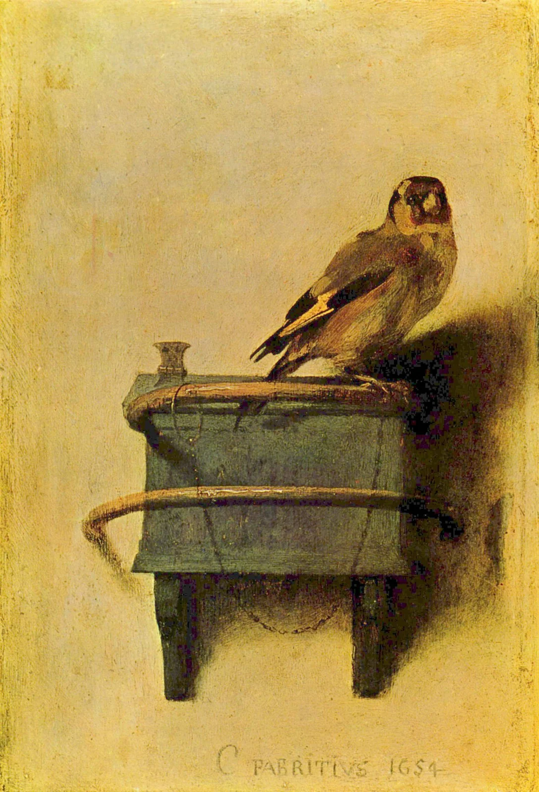

A Small Flash of Yellow
The Goldfinch · Carel Fabritius
An open wall. A small body. A chain that changes the looking.

Object record · Verified
Carel Fabritius (1622–1654), The Goldfinch, 1654. Oil on panel, 33.5 × 22.8 cm. Mauritshuis, The Hague, inventory 605. [1]
Stay with the small things
Let the wall register first. Then the dark wing. Then that narrow seam of yellow. A tiny area of colour holds an unexpectedly large share of our attention. This is a painting for practising slow looking: few objects, consequential distances. The visual observations below refer to the reproduction shown here.
Composition | Air above, weight below
The bird sits right of centre and slightly above the midpoint. Its tail leads down and left to the feeder, while the curved perch softens the box and brackets beneath it. The upper wall gives the body room to extend; the structure below anchors it. Empty space begins to exert pressure. There is plenty of room around the bird, but only a small support beneath its feet. The composition keeps openness and confinement in the same frame.
Colour | Make one accent earn its place
In this historical reproduction, ochre, grey-brown and dark feathers share the field; the feeder carries a muted greenish note. Neighbouring warm hues keep the background continuous. Against the dark wing, yellow appears both brighter and more saturated: a local contrast of value and chroma. Yellow and black are not a complementary pair. The grey-green offers a slight temperature shift without competing for attention. Reproduction, display and restoration state affect colour, so the palette below is an editorial exercise.
Light | A shadow enlarges a presence
Shadows extend to the right, suggesting illumination from the upper left; this is an inference from the image. The dark underside projects the feeder away from the wall. Softer edges around the bird suggest a thin interval of air. Its body is small, yet its shadow claims more space. Remove that shadow and the silhouette could become an emblem. Restore it, and we begin to believe in weight, distance and a surface just beyond the feathers.
Technique | Paint becomes a wing
The museum describes thick yellow paint scored while wet to articulate the wing. [1] Up close, a feather briefly becomes material again: a raised stroke and an incision exposing darkness. Step back and those separate marks become something light enough to lift. Looking involves two adjustments of focus, from the movement of a hand to the presence of a bird. Conviction does not depend on describing every feather.
The artist | Moving towards the light wall
A pupil of Rembrandt, Fabritius moved to Delft in 1650 and explored lighter colours and spatial illusion. He died in the city’s gunpowder explosion in 1654. [2] This context helps place his experiments. It does not establish the chain as a prediction of his death. Biography and the associations a later viewer brings to a painting deserve separate space.
Why it moves | Lightness meets a limit
The yellow arrives before the chain. Pleasure in colour slowly becomes awareness of the body’s situation. I read a restrained tenderness here: no dramatic gesture tells us how to feel, yet a fine line makes staying look less voluntary. That is an interpretation, rather than a claim about the painter’s intention. Returning to the empty wall, I find its openness newly complicated. Available space and reachable space are different things.
Try it | Give colour a single address
For a still life, place a small object off centre against a pale wall. Leave roughly half the frame quiet and use side light to let its shadow help balance the image. For a layout, try 70% warm paper #F3EBD9, 25% deep brown #38342C and 5% feather yellow #D3A62F. These are editorial colours and suggested proportions, not measurements of the painting. Begin with a single yellow accent. Add colour gradually and watch whether the eye still knows where to land.
Social caption
First the yellow. Then the chain. A small painting holds both lightness and a limit. Try giving colour one precise address, and space enough time to speak. #DailyArt #Painting #Composition #ColourStudy